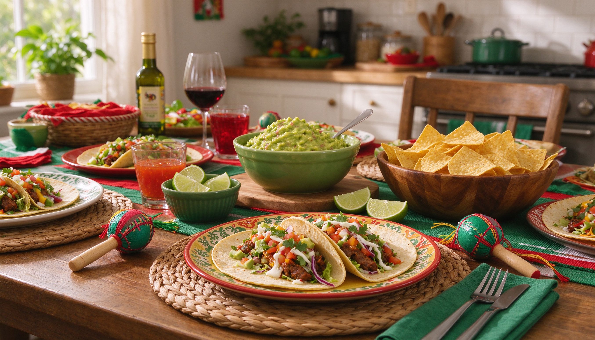

An at-home fiesta, kid-friendly food, crafts, and a quick history lesson — without the crowded restaurants.
Cinco de Mayo is often mistaken for Mexico's Independence Day (that's actually September 16). It commemorates the 1862 Battle of Puebla, where a small Mexican army defeated the French. In the U.S., it's become a celebration of Mexican culture, food, and community — perfect for a low-key family party on May 5.
A build-your-own taco bar is the easiest family-friendly spread. Lay out soft tortillas, shredded chicken or beans, cheese, lettuce, diced tomato, and mild salsa. Kids love assembling their own, and you can sneak in veggies without a fight.
Turn it into a mini lesson: count to ten in Spanish, name three colors, or learn "¡Buen provecho!" before dinner. It's low-pressure and sticks better when tied to a celebration.